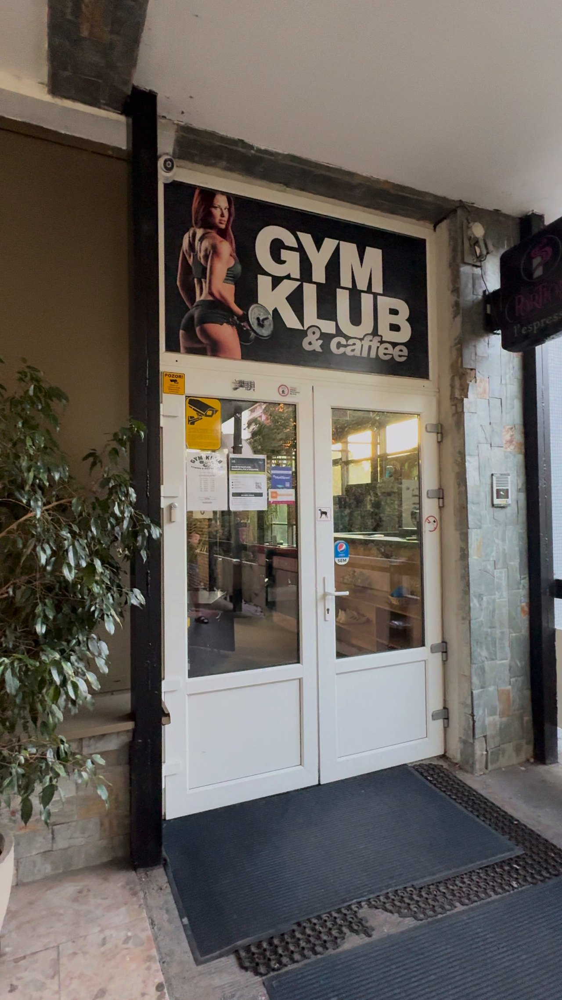
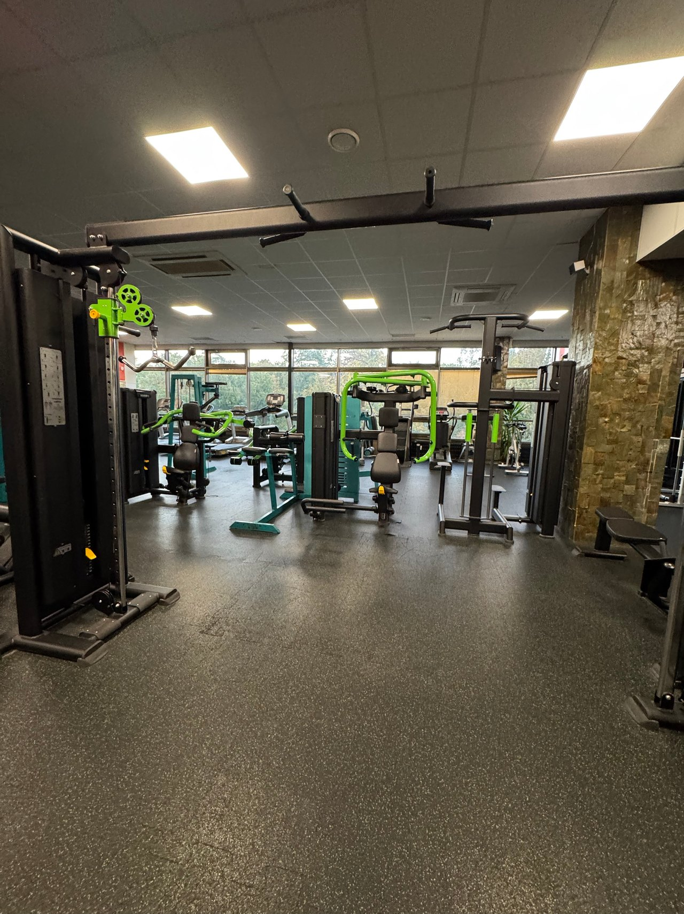
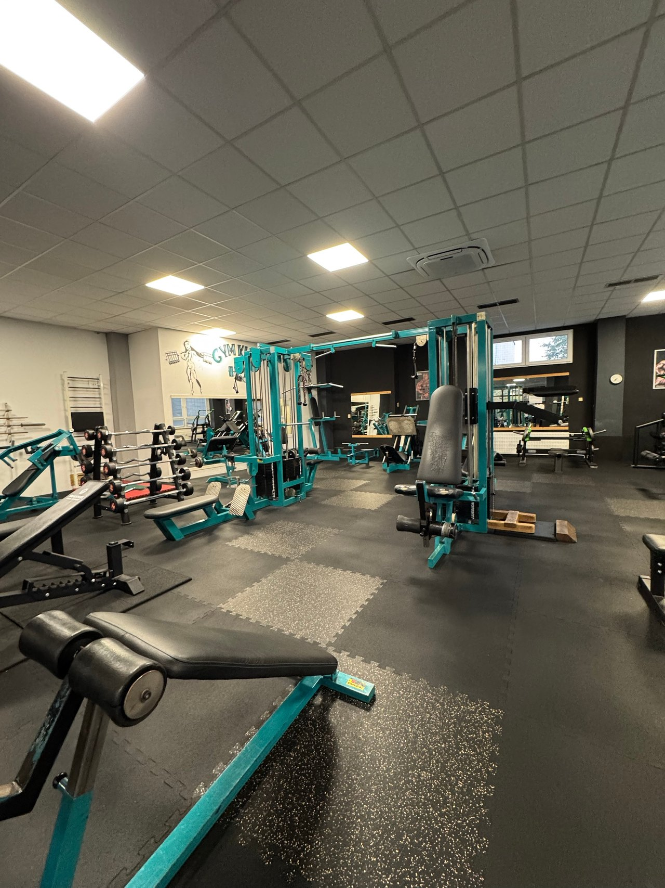

01 / 07
Príchod a recepcia
Vchod je z krytej terasy Lipa Centra, dvere pod nápisom GYM KLUB & caffee. Hneď za nimi je recepcia s nápojmi a polička na obuv, tu zaplatíte vstup.


O fitku · 7 priestorov
Za recepciou nasledujú dve sály so strojmi, kardio pri oknách, voľné váhy, funkčná zóna so šprintérskou dráhou a samostatná miestnosť s tatami. Celé fitko je plne klimatizované.
Prehliadka
Priestory sú zoradené tak, ako nimi prejdete. Veľká fotka je priestorová, pohnite myšou alebo potiahnite prstom. Ďalšie fotky posuniete pod ňou, ťuknutím ich zväčšíte.
01 / 07
Vchod je z krytej terasy Lipa Centra, dvere pod nápisom GYM KLUB & caffee. Hneď za nimi je recepcia s nápojmi a polička na obuv, tu zaplatíte vstup.

02 / 07
Najviac strojov na jednom mieste: viacstaničné kladkové veže, stroje so záťažou na jednotlivé partie, kotúčové jednoručky a zrkadlová stena.

03 / 07
Druhá, svetlá sála s veľkými oknami: kladkové stroje, polohovateľné lavice, lavice so stojanmi na osi a stojan s pevnými činkami.

04 / 07
Rad bežeckých pásov Life Fitness pri oknách s výhľadom do zelene, eliptický a schodový trenažér. Hodí sa na rozcvičenie aj samostatný kardio tréning.

05 / 07
Stojany s jednoručkami pri zrkadlách, samostatný stojan s gumovými jednoručkami do 20 kg, lavice so stojanmi na osi, kotúče a lavica na bicepsy.

06 / 07
Priestor na kondičný a funkčný tréning: šprintérska dráha na podlahe, rig Life Fitness so závesnými popruhmi a boxovacím vrecom, kettlebelly, medicinbaly a vzduchový bicykel.

07 / 07
Samostatná miestnosť bez strojov: podložky, zrkadlová stena, švédska rebrina a závesné popruhy.


Zázemie
Na samostatný tréning sa netreba objednávať. Stačí prísť počas otváracích hodín s čistou obuvou, uterákom a vodou.